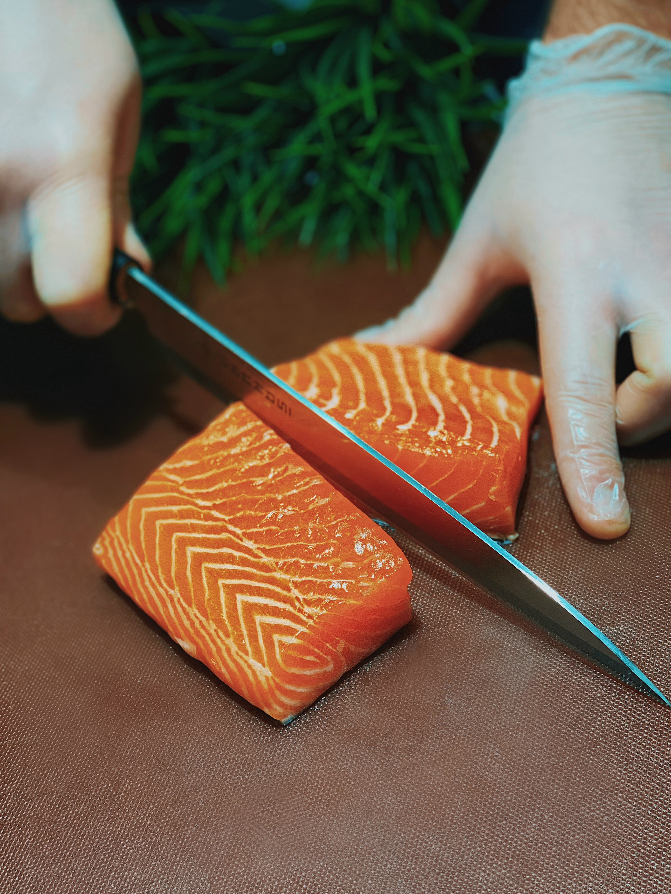

Crispy Salmon
- 8-12oz salmon filet
- garlic powder
- honey
- butter
- parmasean cheese
- soy alt
- basil
- pepper
- gronola

- poke holes in salmon and slice directly down the center

- preheat air fryer to 450
- lather soy alt all over salmon then place salmon in oven/air fryer for 5-7min
- next take salmon out stick slices of butter in cut you made
- lather honey all over salmon
- season salmon with garlic, pepper, and basil then place back in air fryer for 7 more min
- next take salmon back out and put on the cheese and granola, put salmon back in for atleast 3-5 more min
- let cool and enjoy